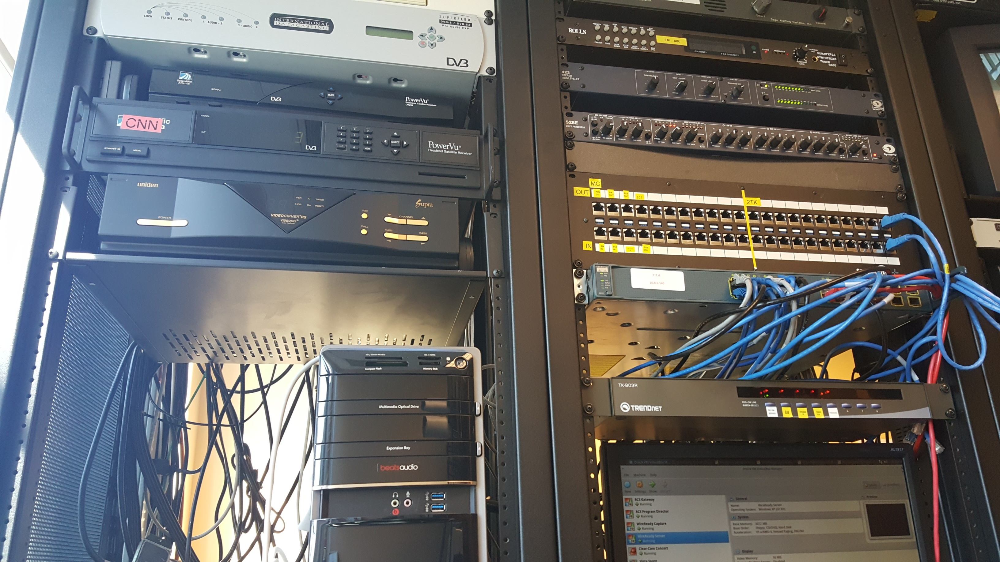
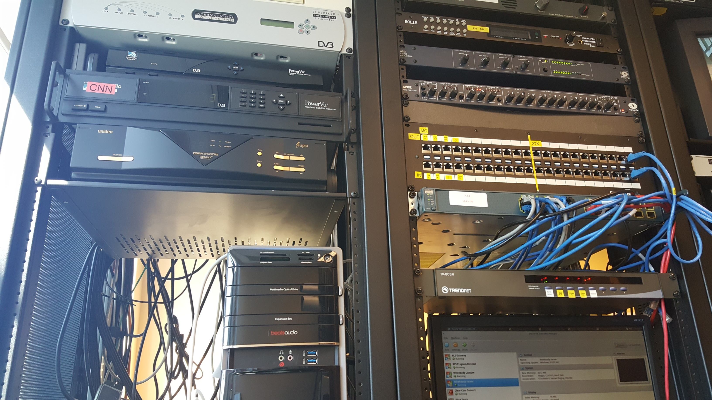

Now that I'm back at Westminster, I'm happy to be back at Titan Radio and WCN 24/7 doing system administration and software engineering. It's an amazing opportunity for me, as it allows me to combine my love of computers and music.
I'm having a lot of fun playing with all of the hardware and learning the ins and outs of operating a radio and TV station. I've been working a lot with networking the computers and attempting to automate parts of the station's workflow, like automating alerts and updates based on weather events and forecasts.
 

Hopefully my work here will lead to some more interesting projects, so keep an eye out!